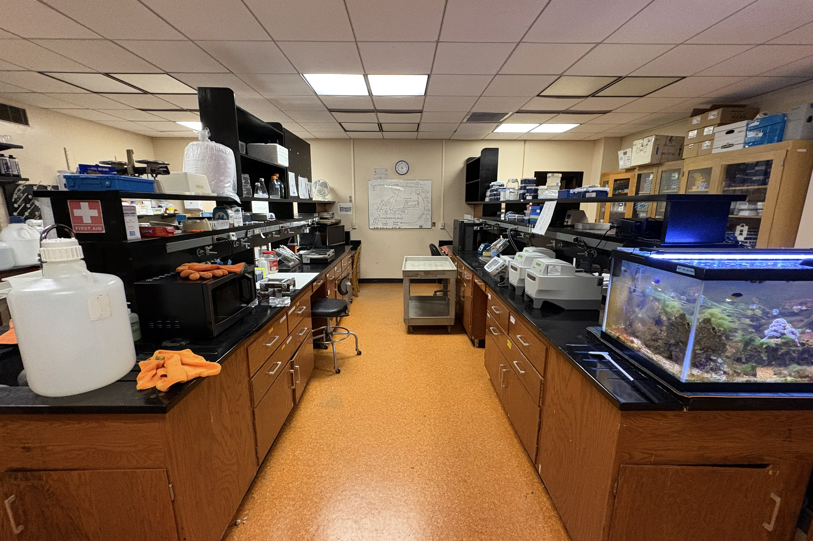
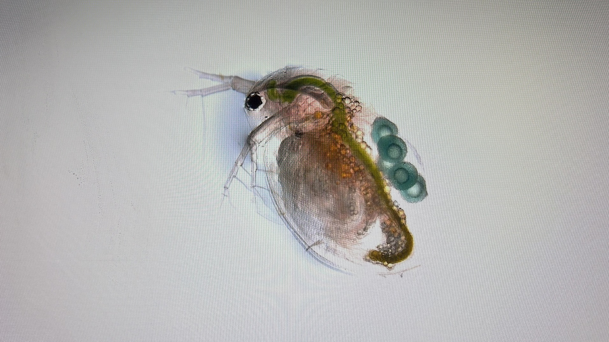

Background
Climate change has wrought a litany of life-changing consequences on our planet, but let us not mistake the culprits for anything other than what—rather, who—they are. Climate change does not exist by chance, and its roots are suspiciously anthropogenic. I cannot personally attest to having always blamed the right people when it comes to describing the tragic environmental issues we face as a global society. Kings of the fossil fuel industry as well as the agriculture and transportation and manufacturing and tourism industries (to name the biggest ones) have exploited our world’s resources for profit and power, building a “modern” society so dependent on environmental exploitation that we Americans have trouble identifying the problems and problem-makers (Pasquini et al., 2023). In a sense, blindness to the destruction of our ecosystems is a requisite coping mechanism for those who wish to live a life free of controversy—or free of any semblance of admission to being a part of the problem. Yes, many of us are mere pawns of the corporatist oligarchs who wage the war against earth, but we, as a global collective, must recognize that we addictively consume the means of our own destruction. Understanding that our existence, in its current form, is self-destructive—maybe, even hopeless in its trajectory—is the first stage of realization. The war against earth does not end when we realize our reality, but it becomes, to some degree, stoppable.
Issue
Anyone is capable of making a difference to benefit the rebellion against the climate-destroyers, and that difference can—and does—take many forms. For example, scientific research on the causes and effects of climate-harming actions, such as drilling for oil, is instrumental in changing public opinions on the major contributing factors to climate change. Though seemingly hyper-specific, the evolutionary research I have conducted with Daphnia (keystone species of zooplankton) conveys notable implications for the effects of climate pollution on evolutionary success in a wide range of organisms. Pharmaceutical and agrochemical pollution represent significant forms of climate harm, and these chemicals pollutants can directly affect the reproduction of primary producers, like Daphnia. Any harm done to Daphnia or other keystone species will have innumerable effects on organisms of higher trophic levels (i.e., organisms higher-up in the food chain) and the environments they inhabit.

Solution
As a researcher in the Dudycha Environmental Ecology and Evolutionary Genomics Laboratory at USC, I have observed, firsthand, the impact of environmental pollutants on the model species Daphnia pulicaria. Endocrine-disrupting chemicals (EDCs) comprise a class of natural and synthetic chemicals that affect the endocrine functions of any organism with an endocrine system, including all vertebrate organisms (Baldridge, 2024). These chemicals can inhibit normal endocrine signaling, causing a cascade of deleterious changes. For example, in Daphnia pulicaria, the hormone methyl farnesoate and its analogs (natural and synthetic hormones used in agricultural research) impose major changes to the process of sex determination in its offspring. The results of this kind of endocrine disruption primarily involve drastic changes in the proportion of male to female offspring, which impacts how Daphnia reproduce and, thus, the evolutionary fitness of its populations (Lee et al., 2024). In both aquatic organisms and humans, endocrine disruption exists as consequences of pharmaceutical and agrochemical pollution. In this sense, Daphnia are excellent model organisms for understanding the potential consequences—especially evolutionary fitness—that humans experience due to the same pollution. SSRIs (e.g., Prozac, Lexapro, and Zoloft), NSAIDs (e.g., Tylenol, Motrin, and Aleve), pesticides, and insecticides represent a significant chunk of the endocrine-disrupting pollutants that exist in American ecosystems, posing a risk to endocrine system functions (Ortúzar et al., 2022). While many more types of EDCs impact these ecosystems, I will focus my research on the chemical classes aforementioned.
In terms of contributing a solution to the issue of chemical pollution, I can provide context and evidence for the broader argument. Political and economic action are the means by which the American people can fight the perpetrators of climate change. Climate activism requires widespread action—a coalition of people from diverse educational backgrounds, with different skills but a shared vision. In particular, researchers must contextualize the issues at hand, develop methods to obtain data, extrapolate useful trends from that data, and recontextualize the issue in a way that highlights the newly identified trends. It is this research that impassions regular people and feeds the fire of political argument by political action committees (PACs), elected politicians, bureaucrats, and many other influential groups (Parker, 2025). In building a career for myself as a scientific researcher, I am motivated to contribute to change, and I hope that my work will serve as evidence for good change.
My experience as a student researcher will prove valuable during my experiment concerning the effects of EDCs in Daphnia pulicaria. As a sophomore at USC, I began simple experimentation with Daphnia, carefully observing their behaviors and performing a genetic cross to compare the fitness levels of inbred and outbred individuals (see Key Insight 1). Through the course of this early experimentation, I designed a robust process for crossing large numbers of Daphnia, performing the cross experiment several times to improve the reliability and validity of the data I collected. I have expanded upon this research to encompass new concepts, like chemical pollution and endocrine function, in an attempt to increase the scope and importance of my work. As I continue to expand the implications of my research, I am inspired by my work with the REMEDY experiment to hone in on issues relevant to human health—especially those related to food contamination and pollutant toxicity (see Key Insight 2). Many years later, I may compare the endocrine disruption experienced by Daphnia and humans to demonstrate how experimentation with this model organism serves as a warning bell for human health. Even these tiny aquatic creatures share complex health characteristics with humans. At the end of the day, my love for science will forever be intertwined with a love for the study of human health. Impassioned by my own struggles with physical and mental health (see Key Insight 3), I am ready to take the next step toward a career of dedicated research for the good of others.
Implementation
Analyzing the Role of Endocrine Disrupting Compounds in the Determination of Sex in Daphnia pulicaria
Evaluation
For scientific experiments like the one I have proposed above, the evaluation of efficacy and the data collected occurs through statistical analysis and the comparison of those results with other related literature. Furthermore, the peer-review process involves the expertise and guidance of scientists not affiliated with the project at hand. These scientists scrutinize each aspect of experimentation and contextual substance to provide feedback to the authors before publication. Peer-reviewing is a mechanism of accountability for all researchers.
The data analysis portion of the experiment is relatively simple since I will only have collected two types of data: (1) the number of ephippia collected per cross and (2) the number of days that each individual lives after hatching. Broadly speaking, for each clonal line in all trials, I will calculate inbreeding depression to evaluate the extent to which inbreeding affected population fitness, and I will calculate the juvenile survival rate as another means of displaying population fitness. The most important statistical testing I will complete involves the two-way ANOVA test. This test will allow me to describe the differences in days lived, inbreeding depression, and juvenile survival rates between lines in the pollutant-free and pollutant-treated trials. These variance analyses will underscore the effect of the tested pollutants on the evolutionary fitness of Daphnia pulicaria populations.
Sources